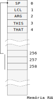

VM
A linguagem VM proposta para o curso é baseada em pilha (assim como tantas outras), as operações nesse nível não lidam mais com registradores do computador porém com dados que são colocados e tirados de uma pilha (stack). Uma grande vantagem disso é a abstração do hardware, agora não precisamos mais nos preocuparmos com a manipulação dos dados em baixo nível e saber por exemplo quantos registradores possuímos (o VMTranslator será encarregado disso). Um código escrito em VM passa pelas seguintes etapas antes de ser executado em máquina :
VMTranslator Assembler
.vm -------------> .nasm -------------> .hack
Com o código vm conseguimos implementar funções, o que facilita muito o desenvolvimento de qualquer software e prepara o terreno para conseguirmos implementar uma linguagem de alto nível.
O código vm é traduzido para linguagem nasm pelo VMTranslator (vocês vão ter que fazer parte desse programa no último projeto), e então é montado pelo Assembler para linguagem de máquina.
Temos diversas vantagens quando programamos em linguagem virtual:
- Abstração de Hardware
- (já não mais lidamos com o hardware diretamente)
- Portabilidade
- Código mais alto nível
- (chamada de funções, linguagem mais próxima do que estamos acostumados, ...)
Exemplo
O programa a seguir escrito em vm, faz uso de uma função de multiplicação para multiplicar 7*2:
function Main.main 0
push constant 7
push constant 2
call mult 2
A função de multiplicação mult é implementada como a seguir:
function mult 2
push constant 0
pop local 0
push argument 1
pop local 1
label loop
push constant 0
push local 1
eq
if-goto end
push local 0
push argument 0
add
pop local 0
push local 1
push constant 1
sub
pop local 1
goto loop
label end
push local 0
return
Pilha
A linguagem VM é baseada em pilha, ou seja, todas as operações que serão realizadas serão feitas na pilha. A pilha é uma região da memória RAM (no nosso caso começa no endereço 256 da memória RAM) reservada para armazenar os dados que estão sendo manipulados.
A pilha cresce conforme operações de push (envio de dados para a pilha) vão sendo executados, e decresce conforme operações cálculo ou de pull (retirar dados da pilha) são executadas.
A figura a seguir demonstra o código a evolução da pilha quando o código a seguir é executado:
push constant 3
push constant 7
add
pop temp 0
Esse código carrega as constantes 3 e 7 para a pilha e faz soma deles, o resultado é guardado no endereço de temp 0.

Explicando
- A pilha começa vazia e o Stack Pointer (SP) aponta para
256 - Uma operação de
push constant 3é executada, SP é incrementando e o valor 3 é colocado no topo da pilha - Uma operação de
push constant 7é executada, SP é incrementando e o valor 7 é colocado no topo da pilha - Adicionasse os dois valores no topo da pilha
add - Retira o valor do topo da pilha para o endereço de memória temporário
0.
Stack Pointer (SP)
O Stack Pointer é o endereço de memória (RAM[0]) reservado por apontar o topo da pilha, ou seja, a próxima posição vazia da pilha. O SP é salvo na RAM 0 (R0) e deve ser incrementado/decrementado conforme a pilha vai sendo manipulada.

Operações
Considerando a seguinte disposição na pilha :
...
...
X
Y
SP ->
São suportadas as seguintes operações aritméticas na pilha:
add
- executa:
X + Y
sub
- executa:
X - Y
neg
- executa:
-Y(complemento de dois)
eq
- compara
X == Y- True : resulta em b"11111111111111111", 0xFFFF
- False: resulta em b"0000000000000000"", 0x0000
gt
- compara
X > Y- True : resulta em b"11111111111111111", 0xFFFF
- False: resulta em b"0000000000000000"", 0x0000
lt
- compara
X < Y- True : resulta em b"11111111111111111", 0xFFFF
- False: resulta em b"0000000000000000"", 0x0000
and
- executa:
X and Y(bit a bit)
or
- executa:
X or Y(bit a bit)
not
- executa:
not Y(bit a bit)
Note
As operações de comparação (eq, gt, lt) resulta em um True ou False e esse resultado é salvo na pilha. Considere o exemplo a seguir (em hexa) que possui inicialmente na pilha os valores 0x2, 0x3 e 0x5, após a operação de eq os valores 3 e 5 são comparados e resulta em um valor True ou False (0xFFFF ou 0x0000).
-> eq -> -> gt ->
0x2 0x2 0xFFFF
0x3 0x0 SP->
0x5 SP->
SP->
Warning
A pilha não é 'limpada' a cada operação, os endereços que não sofreram modificação dado uma operação continuam lá, mas você não pode considerar que eles são válidos! Se olharmos a memória real do exemplo anterior seria a seguinte:
-> eq -> -> gt ->
0x2 0x2 0xFFFF
0x3 0x0 SP-> 0x0
0x5 SP-> 0x5 0x5
SP-> 0x0 0x0 0x0
O mesmo acontece com arquivos que são deletados do seu computador, o sistema operacional não "limpa a memória" sempre que um arquivo é excluído, apenas apaga o ponteiro para aquele arquivo.
stackoverflow
Agora você consegue entender o significado do nome do site stack overflow? é um estouro na pilha (quando o tamanho da pilha ultrapassa a memória que está reservado para ela!)